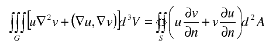
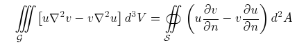
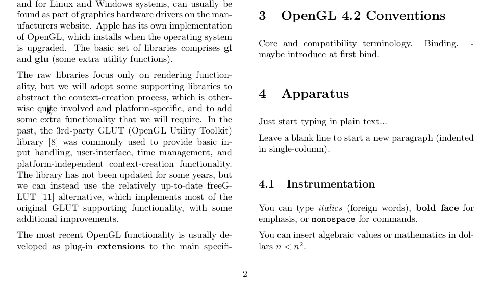
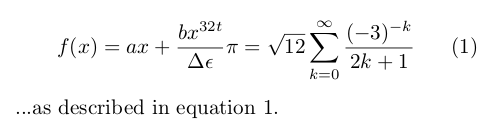

LaTeX
LaTeX Lab
- everyone at 8-12 Thursday in G311
- play with LaTeX features
- anything I missed from the lecture
- finish assignments?
LaTeX
7 Feb 2012 - Dr Anton Gerdelan - apg@bth.se
- formats professional (academic), type-set documents
- can split large documents into chapter files
- many difficult tasks (T.O.C., referencing) are automatic
- usually do not need to fiddle with fonts, styles
- has lots of obscure markup tags (something like HTML or CSS)
- figure placement can be a challenge
MS Word:

LaTeX:

Tex
- Tex ["Techshghhhh"] is a type-setting engine by Donald Knuth (1977)
- very high-quality production
- low-level interface
- LaTeX ["Lah-tek"] is a package of macros for Tex by Leslie Lamport (1st version 1984)
- latest version LaTeX2e
- Lots of styles/packages for LaTeX created to pre-format documents in a specific style
- Publishers usually provide authors with a style or class file that they include;
IEEE,
acmsiggraph,
Computer Graphics TRs
- Authors then just write plain text with some tags and LaTeX compiles document into style
Skeleton
gnuplotlab.tex
%% gnuplot lab worksheet by Anton Gerdelan apg@bth.se
\documentclass{article}
% properties of the title
\author{Anton~Gerdelan}
\date{\today}
\title{Visualisation Lab: gnuplot}
\usepackage{graphicx}
\begin{document}
\maketitle % put the title here
\section{What is gnuplot?}
gnuplot is a tool for creating graphs and charts.
\end{document}
- preamble, packages, body
- I will now copy, paste, and compile...
LaTeX Programmes
- latex .tex -> .dvi
uses .eps images natively
- pdflatex .tex -> .pdf
.pdf includes fonts in the file but does not support .eps
- dvipdfm .dvi -> .pdf
handy to get a pdf with eps images
- dvi2ps .dvi -> .ps
- When you run pdflatex it does a single pass over the document.
- Cross-references (e.g. Figure~\ref{fig:myplot}) are collected in a separate file
- .pdf will appear with "Figure ???"
- To compile cross references in, run pdflatex again
- When including citations or glossaries, additional passes are needed
Macros and Options
\documentclass[twocolumn]{article}
- LaTeX macros start with a backslash, then the name of the macro
- most macros can then have optional [options]
- next are curly braces where the parameters to the macro go
reserved characters
# $ % ^ & _ { } ~ \
\# \$ \% \textasciicircum{} \& \_ \{ \} \~{} \textbackslash{}
Sections
\section{Apparatus}
Just start typing in plain text...
Leave a blank line to start a new paragraph (indented in single-column mode).
\subsection{Instrumentation}
You can type \textit{italics} (foreign words), \textbf{bold face} for emphasis,
or \texttt{monospace} for commands.
You can insert algebraic values or mathematics in dollars $n < n^2$.

Referencing with Bibtex
- create a .bib file with all your references (books, articles, papers, etc.)
- each .bib entry has a cite_key:
@article{Gerdelan2012, % journal article with cite key "Gerdelan2012"
author = "Gerdelan, A. and Klaus, S.",
title = "Downward Facing Dogs",
journal = "{International Journal of Petroleum Studies}",
year = "2012" % no comma after last entry used
}
- use "...has shown that dogs can not look up~\cite{Gerdelan2012}" in the .tex.
- and just before \end{document}:
\bibliographystyle{plain} % style to use in references section
\bibliography{mydotbibfile} % if using mydotbibfile.bib
...referencing with Bibtex
Now to build the .pdf with references:
pdflatex mydoc.tex % "Warning: There were undefined references.", but makes .aux
bibtex mydoc.aux
pdflatex mydoc.tex % "Warning: Label(s) may have changed. Rerun to get..."
pdflatex mydoc.tex
- \bibliographystyle{plain} can also be abbrv, ieeetr, or alpha (try them)
- tip: to cite a website (not usually in a publication):
@misc{website:fermentas-lambda,
author = "Fermentas Inc.",
title = "Phage Lambda: description \& restriction map",
month = "November",
year = 2008,
url = "http://www.fermentas.com/techinfo/nucleicacids/maplambda.htm"
}
- tip: before submitting, search the pdf for "?" (missing references)
- tip: read .blg bibtex log
Bullets, Numbering
The major advantages of gnuplot are:
\begin{itemize}
\item clean, publication-quality graphs are created
\item error bars are easy to display
\item input data is easy to format
\item data or commands can be piped in from \texttt{stdin}
\item you have control over every aspect of the display
\item you can output to a variety of pixel and vector formats
\end{itemize}
- itemize or enumerate
- item tag
- the \texttt{} tag produces monospace font (code)
Figures
If you want to read about parametric plots you can do something
like Figure~\ref{fig:3dplot}.
\begin{figure}
\includegraphics[width=1.0\textwidth]{3d.png}
\caption{a parametric mode ``splot'' with hidden3d option
(depth sorting) disabled \label{fig:3dplot}}
\end{figure}
- put \usepackage{graphicx} above \begin{document}
- LaTeX puts the figure where it thinks is best (in my case above the text)
- figure options [h!tbp]> options (in order of preference):
"here", "put it here, you bastard!", "top", "bottom", and on a separate page of figures.
- always refer to each figure in the text. \ref{LABELNAME}
- tip: writing quotation marks
Equations
- one of the great advantages of Tex
\usepackage{amsmath} % put in preamble
\begin{equation} \label{eq:someequation}
f(x) = ax + \frac{bx^{32t}}{\Delta \epsilon}
\pi = \sqrt{12}\sum^\infty_{k=0} \frac{(-3)^{-k}}{2k+1}
\end{equation}
...as described in equation~\ref{eq:someequation}..

Tables
- use the tabular environment
- arguments give left, right, centre justification of columns, and | or || for dividers
- columns are separated by &
- to get a new row use \\
- \hline draws a line under a row
\begin{tabular}{ l c r }
1 & 2 & 3 \\
4 & 5 & 6 \\
7 & 8 & 9 \\
\end{tabular}
Better Tables
- put tabular inside a table environment for caption and label
- table environment works a lot like figure environment (same h t b p ! options)
\begin[h!tbp]{table}
\caption{Performance at peak F-measure \label{tab:fmeasure}}
\begin{tabular}{| r | r || c | c | c |}
...
\end{tabular}
\end{table}
hint: use minimal lines; usually just a bold row of labels is enough
again: refer to each table in the text with \ref{LABEL}, and pdflatex twice
Errors and Warnings
- type x to quit, enter to continue, or q to be quiet and carry on
- usually missing packages; should be auto-installed with MiKTeX
- maths symbols must be inside $$
- also check the bibtex log to see if there are any mistakes in the .bib or missing references
- descriptions of common errors:
http://en.wikibooks.org/wiki/LaTeX/Errors_and_Warnings
Fancy Things
- Jabref! http://jabref.sourceforge.net/
- splitting a large document into several documents with \include{chapter2.tex}
- code fragments with "listings" package and algorithms with "algorithmic"
- using gnuplot to embed maths symbols into .eps labels
- "beamer" for presentation slides
- circuit diagrams, music notation, chemistry diagrams...
- changing fonts, styles, and classes
- adding or removing vertical white space
Typical Article Structure
- title, authors, institute, emails, date
- abstract (siggraph does a banner/teaser image under this)
- introduction
- literature review (thesis) or previous works (paper)
- state of the art, or latest developments in area
- theory or hypothesis
- experiment design or method
- results
- discussion, conclusions, future works
- references